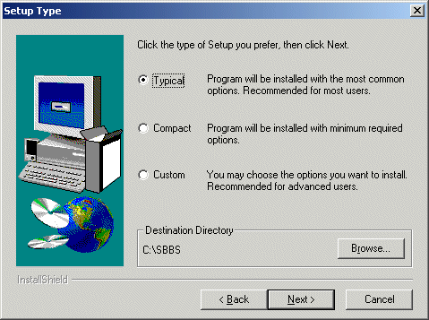
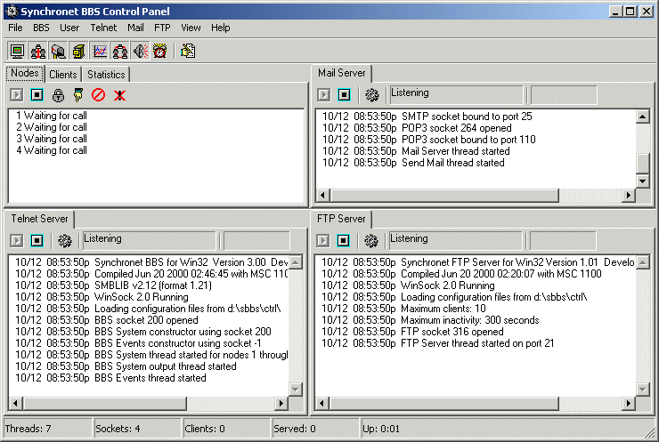

You can find the latest released public distribution of Synchronet at http://www.synchro.net.
Because of the many variances when changing to a different version or revision of Synchronet, this topic is not covered here. When upgrading an existing Synchronet installation to a newer version or revision, you should ALWAYS consult the upgrade documentation included with the distribution (usually in the form of an UPGRADE.TXT file). Upgrade-only distributions are usually made available in a more compact archive form (e.g. sbup300c.zip).
After downloading the Synchronet distribution file (e.g. sbbs300c.zip), you will need to extract the archive file that you downloaded into a temporary directory on your hard drive. You will need WinZip or an equivalent archive program to uncompress and extract the installation files.
Once you've extracted the installation files, go to the directory you extracted the compressed files to and run SETUP to start the installation.
The default installation directory should be fine for most users. If you choose to change the installation directory, it is critical that you DO NOT use a path with long filenames or spaces as Synchronet still relies on some 16-bit DOS utilities which require DOS-compatible 8.3 file and directory names to function. It is recommended you use a directory named SBBS off of the root directory on one of your hard drives (e.g. C:\SBBS).
You should now be at the Setup Type Installation menu. From this menu, you can select the items that you want (or don't want) installed, as well as a few other options.

After completing your selection and the installation is completed you will find a new Icon on your Desktop and in your StartUp Folder in your Start Menu. If you do not want Synchronet to start automatically during boot, you may safely delete the Synchronet shortcut from your StartUp Folder.
Upon Executing Synchronet the screen will look something like the one below.
 After starting Synchronet for the first time there will be several pop-up windows that are running programs and events required before the system can be used.
The last window that opens will start the Synchronet Configuration Program (SCFG). To run SCFG again later you can load it from the Synchronet Control Panel (SBBSCTRL) by selecting BBS and then Configure from the Pull Down Menu at the top of SBSCTRL.
Before putting the system online you should configure your BBS with SCFG to set your system options and settings according to your preferences. It is recommended you spend some time reading and becoming familiar with your configuration and the many options available.
After completing configuration you should then follow the proper steps to add a sysop account. Once you create the account you should become familiar with the Synchronet User Editor and set the security settings for the account(s) you have created.
Once you have completed the initial setup of your system and sysop account, you have a basic functioning Synchronet BBS System. Please refer to the rest of the documentation to finish the setup of your new BBS System. Back to Top
Before putting the system online you should configure your BBS with SCFG and set your system options and settings according to your preferences. It is recommended you spend some time reading and becoming familiar with your configuration and the many options available.
SCFG is the Synchronet Configuration Utility which can be executed from the "Waiting for call" screen by hitting 'C' or from DOS by typing SCFG from any node directory. Example:
After completing configuration you should then follow the proper steps to add a sysop account. Once you create the account you should become familiar with the Synchronet User Editor and set the security settings for the account(s) you have created.
Once you have completed the initial setup of your system and sysop account you have a basic functioning Synchronet BBS System. Please refer to the rest of the documentation to finish the setup of your new BBS System.
Synchronet has a specific sub-directory for executable programs (EXEC). You need to copy all utilities that the BBS will run into this directory (this does not mean Doors or Online Games). For example, you need to copy PKZIP.EXE and PKUNZIP.EXE into your EXEC directory. If you plan on supporting other archive/compression programs on your BBS, you should copy these programs into the EXEC directory as well. Any file transfer protocol programs need to be copied into your EXEC directory. Synchronet comes with an unregisterd copy of FDSZ (DSZ for the DOS/OS2 version). If you have a registered version of DSZ/FDSZ, copy it into the EXEC directory as well.
There are a number of avenues that can be used to find help on Synchronet.
This list is but a small one of the available resources:
Synchronet Homepage : http://www.synchro.net
Support BBS (Vertrauen) : telnet://vert.synchro.net
Email support: : sysop@vert.synchro.net
Echomail support: FidoNet (zone 1) : SYNC - Synchronet BBS Software Discussion
This manual is an ongoing work of progress. As Synchronet is constantly evolving, so is this manual. This manual will give you comprehensive information about installing, configuring, updating, and maintaing your Synchronet system.
The manual is currently maintained in an Open Source manner. If you have any questions or concerns about the manual, please direct them to : syncdocs@wasteland-bbs.com
Updates for this manual can be found periodically on http://www.synchro.net or at the Synchronet Documentation Project (http://wasteland-bbs.com/syncdocs/).
Copyright © 2000 by Rob Swindell
Synchronet BBS Software (Synchronet)
Version 3 is comprised of several documentation,
library, executable, and source code
files, all of which are covered by the
GNU General Public License with the exception of the following portions
covered by
the GNU Lesser General Public License:
SMBLIB and XSDK.
Synchronet Version 2 (for DOS and OS/2) and its source code was released to the
Public Domain by Digital Dynamics
in 1997 and remains Public Domain software today.
Synchronet Version 3 is not Public Domain software.
Rob Swindell
PO Box 501
Yorba Linda, CA 92885
http://www.synchro.net
For the complete Copyright Information please read the Copyright Documentation .